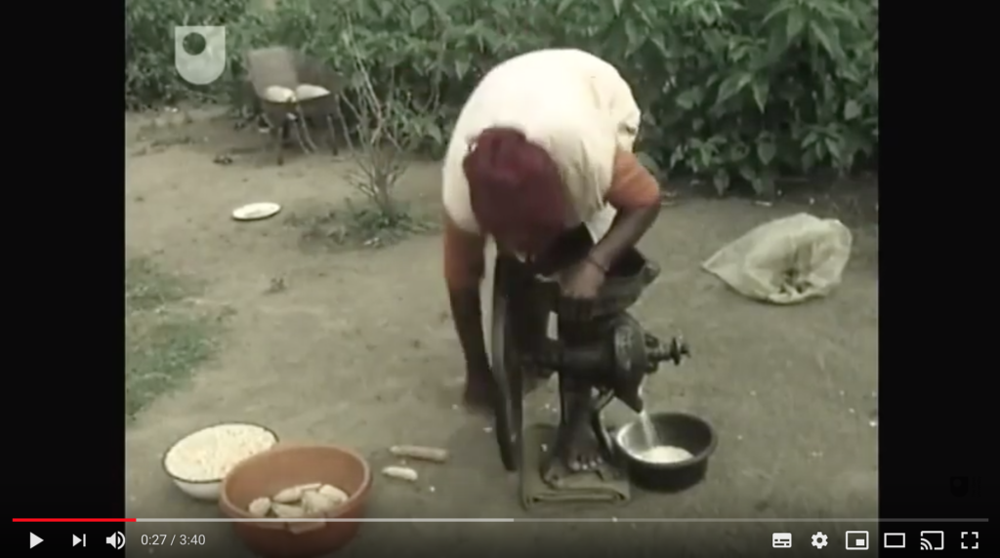
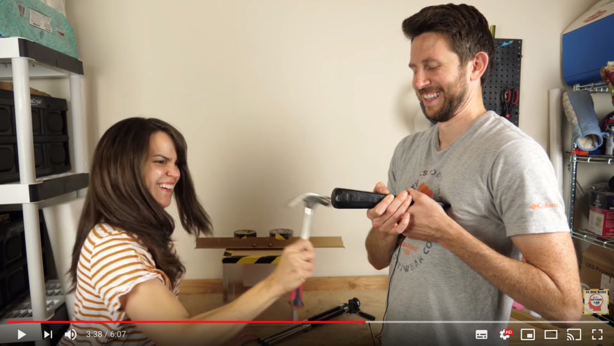
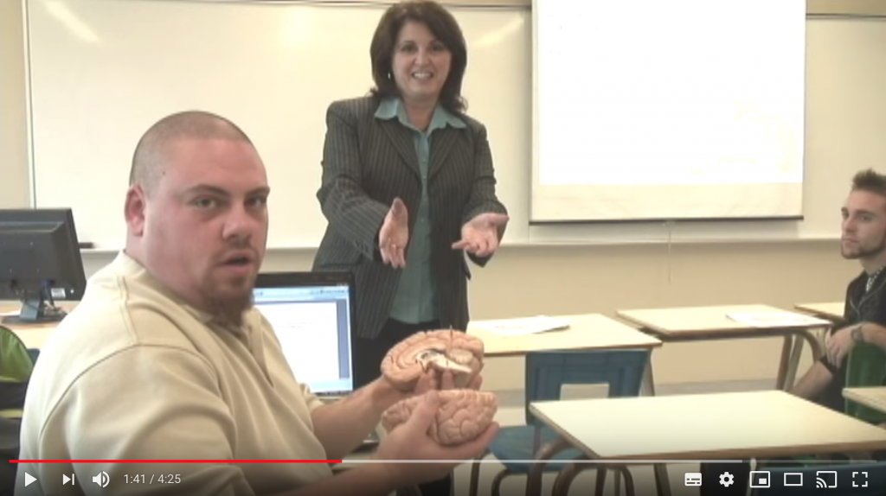

8.4 Vídeo



8.4.1 Mais poder, mais complexidade
Embora se tenham verificado alterações maciças na tecnologia de vídeo nos últimos 25 anos, traduzindo-se em reduções drásticas nos custos de criação e de distribuição de vídeo, as características educacionais únicas permanecem amplamente inalteradas. (As mídias geradas por computador mais recentes, tais como as simulações, serão analisadas na secção "Computação", na Seção 8.5).
O vídeo constitui uma mídia muito mais rica do que o texto ou o áudio, na medida em que, além de oferecer texto e som, também consegue disponibilizar imagens dinâmicas ou em movimento. Assim, embora consiga oferecer todas as affordances do áudio e algumas do texto, detém também características pedagógicas únicas. Mais uma vez, tem-se verificado uma investigação considerável sobre a utilização do vídeo na educação e, do mesmo modo, recorrerei a investigações da Open University (Bates, 1984; 2005; Koumi, 2006) bem como de Mayer (2009).
Clique nas hiperligações para ver exemplos de muitas das características descritas abaixo.
8.4.2 Características de apresentação
O vídeo pode ser utilizado para:
- demonstrar experiências ou fenômenos, em particular:
- quando os equipamentos ou fenômenos a observar se revelam de grande escala, microscópicos, dispendiosos, inacessíveis, perigosos ou difíceis de observar sem equipamentos especiais (ver um exemplo da Universidade de Nottingham);
- quando os recursos se revelam escassos ou inadequados para a experimentação dos estudantes (por exemplo, animais vivos, órgãos do corpo humano) (ver um exemplo da anatomia do cérebro, da Universidade da Colúmbia Britânica);
- quando o desenho experimental se apresenta complexo (por exemplo, testar se os tubarões selvagens são mais atraídos pelo sangue do que pelo óleo de peixe);
- quando existe um elemento de risco ou perigo na realização da experiência (ver um exemplo demonstrando a conservação do momento linear);
- quando o comportamento experimental pode ser influenciado por variáveis incontroláveis mas observáveis;
- ilustrar princípios que envolvam alterações dinâmicas ou movimentos (ver um exemplo explicando o crescimento exponencial num curso da UBC);
- ilustrar princípios abstratos através da utilização de modelos físicos especialmente concebidos, por exemplo, uma animação de uma curva normal de distribuição;
- ilustrar princípios que envolvem o espaço tridimensional, por exemplo, ver este vídeo do Nova Scotia Community College;
- demonstrar alterações ao longo do tempo através da utilização de animações, câmera lenta ou vídeo acelerado (ver um exemplo de como as células de Haemophilus influenzae absorvem o DNA, da UBC);
- demonstrar procedimentos corretos em matéria de saúde, segurança, reparações e manutenção (como exemplo, ver Brady’s EMR Skills Video);
- substituir uma visita de estudo ao local (visita de campo), ao:
- proporcionar aos estudantes uma imagem visual precisa e abrangente de um local, a fim de contextualizar o tema em estudo; por exemplo, ver o sítio arqueológico indígena de Bodo, em Alberta;
- demonstrar a relação entre diferentes elementos de um sistema em estudo (por exemplo, processos de produção, equilíbrio ecológico); a título de exemplo, ver o processo de fabricação de papel;
- identificar e distinguir diferentes classes ou categorias de fenômenos no local (por exemplo, em ecologia florestal);
- observar diferenças de escala e de processo entre as técnicas laboratoriais e as de produção em massa;
- recorrer a modelos, animações ou simulações para ensinar determinados conceitos científicos ou tecnológicos avançados (como as teorias da relatividade ou a física quântica) sem que os estudantes necessitem de dominar técnicas matemáticas altamente avançadas; ver, por exemplo, "Einstein’s Theory of Relativity Made Easy".
- disponibilizar aos estudantes fontes primárias ou materiais de estudo de caso, ou seja, a gravação de acontecimentos naturais que, através de edição e seleção, demonstrem ou ilustrem princípios abordados noutras partes de uma disciplina;
- demonstrar formas pelas quais princípios ou conceitos abstratos desenvolvidos noutras partes da disciplina foram aplicados a problemas do mundo real, por exemplo, gestão inovadora de águas pluviais no Mestrado em Gestão de Terras e Águas da Universidade da Colúmbia Britânica;
- sintetizar uma vasta gama de variáveis num único acontecimento registrado, por exemplo, para sugerir a forma como os problemas do mundo real podem ser resolvidos;
- demonstrar processos de tomada de decisão ou decisões "em ação" (por exemplo, triagem numa situação de emergência) ao:
- registrar o processo de tomada de decisão tal como ocorre em contextos reais;
- registrar simulações encenadas, dramatizações ou jogos de papéis (role-playing), como nos cenários do programa Therapeutic Communication and Mental Health Assessment Program da Universidade de Ryerson;
- demonstrar os procedimentos corretos na utilização de ferramentas ou equipamentos (incluindo procedimentos de segurança);
- demonstrar métodos ou técnicas de execução (por exemplo, competências mecânicas como desmontar e voltar a montar um carburador, esboçar, desenhar ou técnicas de pintura em aquarela, ou dança);
- registrar e arquivar acontecimentos cruciais para os temas de uma disciplina, mas que possam desaparecer ou ser destruídos num futuro próximo, tais como, por exemplo, grafites de rua ou edifícios condenados (ver um exemplo sobre letreiros de néon em Vancouver);
- demonstrar atividades práticas a realizar pelos próprios estudantes (por exemplo, ver 32 experiências fantásticas para fazer em casa).



8.4.3 Desenvolvimento de competências
Este processo exige normalmente a integração do vídeo com as atividades dos estudantes. A capacidade de parar, retroceder e voltar a reproduzir o vídeo torna-se crucial para o desenvolvimento de competências, uma vez que a atividade do estudante decorre normalmente de forma separada da visualização real do vídeo. Isto pode implicar conceber cuidadosamente atividades para os alunos associadas à utilização do vídeo.
Se o vídeo não for utilizado diretamente para a transmissão de aulas expositivas, a investigação indica claramente que os estudantes necessitam, de modo geral, de orientação sobre o que procurar no vídeo, pelo menos na fase inicial de utilização deste recurso para a aprendizagem. Existem várias técnicas para associar acontecimentos concretos a princípios abstratos, tais como a narração em áudio sobre o vídeo, a utilização de uma imagem estática para destacar a observação ou a repetição de uma pequena secção do programa. Bates e Gallagher (1977) constataram que a utilização do vídeo para desenvolver análises ou avaliações de nível superior constituía uma competência passível de ser ensinada e que necessita de ser integrada no desenvolvimento de uma disciplina ou programa para obter os melhores resultados.
As utilizações típicas do vídeo para o desenvolvimento de competências incluem:
- permitir aos estudantes reconhecer fenômenos ou classificações naturais (por exemplo, estratégias de ensino na sala de aula, sintomas de doença mental, comportamento na sala de aula) em contexto;
- permitir aos estudantes analisar uma situação, recorrendo a princípios apresentados na gravação de vídeo ou abordados noutras partes da disciplina, como um livro didático ou uma aula expositiva; por exemplo, potencial material de base sobre a gestão da violência doméstica;
- interpretar atuações artísticas (por exemplo, teatro, poesia falada, filmes, pintura, escultura ou outras obras de arte);
- analisar composições musicais através do recurso a atuações musicais, narração e recursos gráficos;
- testar a aplicabilidade ou relevância de conceitos abstratos ou generalizações em contextos do mundo real (ver, por exemplo, o vídeo da Agência Espacial Europeia sobre as alterações climáticas);
- procurar explicações alternativas para fenômenos do mundo real.
Existem muitas formas pelas quais o vídeo pode ser utilizado para o desenvolvimento de competências. No entanto, independentemente da forma como o vídeo é utilizado para esse fim, além da demonstração da competência, deve assegurar-se que existem oportunidades de prática e de feedback para o estudante, provavelmente recorrendo a outras mídias, embora seja agora cada vez mais simples para os estudantes produzirem os seus próprios vídeos para demonstrarem as suas competências.



8.4.4 Pontos fortes e limitações do vídeo como mídia de ensino
Um fator que torna o vídeo poderoso para a aprendizagem reside na sua capacidade de demonstrar a relação entre exemplos concretos e princípios abstratos, com a faixa de áudio normalmente relacionando os princípios abstratos aos acontecimentos concretos exibidos no vídeo (ver, por exemplo: Probability for quantum chemistry, UBC). O vídeo revela-se particularmente útil para registrar acontecimentos ou situações em que seria demasiado complexo, perigoso, dispendioso ou impraticável levar os estudantes a esses locais.
Assim, os seus principais pontos fortes são os seguintes:
- associar acontecimentos e fenômenos concretos a princípios abstratos e vice-versa;
- a capacidade dos estudantes de parar e reiniciar o vídeo, para que possam integrar atividades com a visualização;
- proporcionar uma abordagem alternativa à apresentação de conteúdos que pode ajudar estudantes com dificuldades na aprendizagem de conceitos abstratos;
- acrescentar interesse substancial a uma disciplina, associando-a a problemáticas do mundo real;
- um volume crescente de vídeos acadêmicos de elevada qualidade disponíveis gratuitamente;
- adequado para desenvolver algumas das competências intelectuais de nível superior e algumas das competências mais práticas necessárias na era digital;
- a utilização de câmeras de baixo custo e de softwares de edição gratuitos permite produzir de forma econômica alguns formatos de vídeo.
Cumpre também recordar que, além das características listadas acima, o vídeo consegue incorporar muitas das potencialidades do áudio.
As principais limitações do vídeo são:
- muitos docentes não dispõem de conhecimentos ou experiência na utilização de vídeos que não sejam para a gravação de aulas expositivas tradicionais;
- existe atualmente um volume limitado de vídeos educacionais de elevada qualidade de descarregamento gratuito, porque o custo de desenvolvimento de vídeos educacionais de alta qualidade que explorem as características únicas do meio continua a ser relativamente elevado. Além disso, as hiperligações (links) ficam frequentemente inativas após algum tempo, afetando a fiabilidade dos vídeos terceirizados. A disponibilidade de materiais gratuitos para uso educacional melhora constantemente, mas, atualmente, encontrar vídeos adequados e gratuitos que respondam às necessidades específicas de um professor pode revelar-se moroso, ou esses materiais podem simplesmente não estar disponíveis ou não ser fiáveis;
- a criação de materiais originais que explorem as características únicas do vídeo exige tempo e continua a revelar-se relativamente dispendiosa, porque exige normalmente uma produção de vídeo profissional;
- para tirar o máximo partido do vídeo educacional, os estudantes necessitam de atividades concebidas especificamente para o efeito, as quais terão frequentemente de se situar fora do próprio vídeo;
- os estudantes rejeitam frequentemente vídeos que lhes exijam análises ou interpretações; preferem, com frequência, o ensino direto focado essencialmente na compreensão. Estes alunos necessitam de ser preparados para utilizar o vídeo de forma diferente, o que exige dedicar tempo ao desenvolvimento de tais competências.
Por estas razões, o vídeo não se encontra suficientemente aproveitado na educação. Quando utilizado, surge frequentemente como um elemento acessório ou um "extra", em vez de constituir parte integrante do planejamento, ou é utilizado meramente para replicar uma aula expositiva presencial, em vez de explorar as características únicas do vídeo.
8.4.5 Avaliação
Se o vídeo está a ser utilizado para desenvolver as competências delineadas na Seção 8.4.3, torna-se essencial que estas competências sejam avaliadas e contabilizadas para a classificação final. Com efeito, um meio de avaliação possível consistiria em solicitar aos estudantes que analisassem ou interpretassem um vídeo selecionado, ou mesmo que desenvolvessem o seu próprio projeto multimídia recorrendo a vídeos que eles próprios tivessem captado ou produzido utilizando os seus dispositivos pessoais.
Referências
Bates, A. (1984) Broadcasting in Education: An Evaluation London: Constables
Bates, A. (2005) Technology, e-Learning and Distance Education London/New York: Routledge
Bates, A. and Gallagher, M. (1977) Improving the Effectiveness of Open University Television Case-Studies and Documentaries Milton Keynes: The Open University, I.E.T. Papers on Broadcasting, No. 77 (esgotado – cópias disponíveis através do e-mail tony.bates@ubc.ca)
Koumi, J. (2006). Designing video and multimedia for open and flexible learning. London: Routledge
Mayer, R. E. (2009). Multimedia learning (2nd ed). New York: Cambridge University Press
A Universidade da Colúmbia Britânica disponibiliza também duas bibliografias anotadas de investigação em multimídia digital: uma compilada na UBC e outra pela Universidade da Flórida Central.
Atividade 8.4 Identificando as características pedagógicas únicas do vídeo
- Escolha uma das disciplinas que ministra. Quais os aspectos essenciais de apresentação do vídeo que poderiam assumir relevância para esta disciplina?
- Analise as competências listadas na Seção 1.2 deste livro. Quais destas competências seriam mais bem desenvolvidas através da utilização do vídeo em vez de outras mídias? Como faria isso recorrendo a um ensino baseado no vídeo?
- Em que condições seria mais adequado avaliar os estudantes solicitando-lhes que analisassem ou realizassem a sua própria gravação de vídeo? Como poderia isso ser feito em condições de avaliação?
- Pesquise no Google o nome do seu tema de ensino seguido da palavra "vídeo".
- Quantos vídeos são apresentados nos resultados?
- Qual é a qualidade desses vídeos?
- Poderia utilizar algum deles no seu ensino?
- Se sim, como os integraria na sua disciplina?
- Conseguiria produzir um vídeo melhor sobre o tema?
- O que o habilitaria a fazê-lo?
Apresentam-se alguns critérios que eu aplicaria aos resultados encontrados:
- é relevante para o que pretende ensinar;
- demonstra claramente um tema ou assunto específico e associa-o ao que o estudante deve aprender;
- é curto e focado no essencial;
- o exemplo encontra-se bem produzido (trabalho de câmera nítido, bom apresentador, áudio limpo);
- proporciona algo que você não conseguiria realizar facilmente sozinho;
- encontra-se disponível gratuitamente para utilização não comercial.
Para feedback sobre esta atividade e considerações adicionais sobre o valor do vídeo, clique no podcast abaixo:
Um elemento de áudio foi excluído desta versão do texto. Você pode ouvi-lo on-line aqui: https://pressbooks.bccampus.ca/teachinginadigitalagev2/?p=206